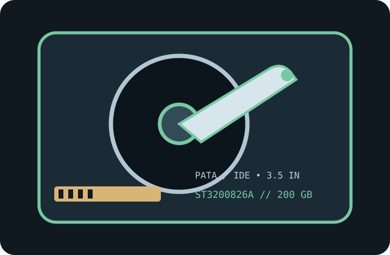

[ IDENTIFIED HDD // MODEL-SPECIFIC RECORD ]
Seagate Barracuda 7200.8 ST3200826A
200 GB; 3.5-inch desktop drive; Parallel ATA / IDE. This record applies only to the complete model suffix shown; family resemblance, connector fit, and stated capacity do not alone establish compatibility.

IDENTIFICATION: Read and record the complete label model, firmware and serial; compare the suffix and revision with the cited PATA documentation before connecting or imaging.
Recorded specifications
| Exact model / family | Seagate Barracuda 7200.8 ST3200826A (Barracuda 7200.8) |
|---|---|
| Nominal capacity | 200 GB (manufacturer decimal capacity) |
| User-addressable sectors | 390,721,968 × 512-byte logical sectors, per model/family specification tables |
| Rotational speed | 7,200 RPM |
| Buffer | 8 MB |
| Form factor | 3.5-inch desktop HDD, standard 1-inch class height; use the exact model drawing and bay clearance when mounting. |
| Interface / transfer modes | 40-pin Parallel ATA / IDE; Ultra ATA/100; UDMA mode 5 (100 MB/s interface ceiling). The link rate is a maximum interface signaling rate, not a sustained media rate. |
| Device selection / jumper | PATA device-select options include Master/Single, Slave, and Cable Select; confirm exact jumper layout against the model label/manual. Never assume a jumper setting from a related SKU. |
| Sector presentation | 512 bytes per logical sector; legacy 512-byte-sector addressing (not an Advanced Format 4Kn device). |
Host compatibility
- Requires a motherboard or add-in controller with a compatible 40-pin PATA channel and legacy ATA support; SATA-only ports do not accept this device without an appropriate active bridge. Confirm the controller's supported ATA mode and any throughput limitation.
- For UDMA operation, use a correctly keyed 80-conductor PATA cable with 40-pin connectors. Set the drive's Master/Single, Slave, or Cable Select jumper consistently with the second device and the motherboard's cable-select support.
- This drive exceeds 137 GB. A host BIOS/controller and operating system with 48-bit LBA support are required to address the full capacity; legacy systems may need a compatible overlay or PCI ATA controller.
- Mount in a compatible 3.5-inch bay, connect the documented 4-pin peripheral power lead, and verify BIOS detection, logical sector count, and OS support before partitioning. Old software may misreport geometry or truncate capacity.
Handling and preservation notes
- Use ESD precautions; avoid impact, vibration, condensation, and powered movement. Keep the drive level and securely mounted, and use stable power within the manual's environmental limits.
- Do not open the sealed assembly or run repeated power cycles, writes, or stress tests on a drive with valuable data. Clicking, repeated spin-up, disconnects, or read errors warrant powering down and consulting a qualified recovery specialist.
- For acquisition, preserve the original label, jumper position, cabling/controller and firmware details; prefer read-only imaging, record errors, and verify image checksums. Maintain separate verified copies—the aging device must not be the only copy.
Manufacturer documentation
- Seagate Barracuda 7200.8 PATA Product Manual (100323825, Rev. F)The family product manual includes model-specific capacity and electrical/interface tables; use the installation guide for cabling and setup.
- Seagate/Maxtor ATA Hard Drive Installation GuideManufacturer/manual reference for model specifications, installation, interface modes, jumper configuration, or handling.
Model capacities, sector counts and performance fields follow the cited manufacturer documentation. Confirm document revision and exact label model before use.